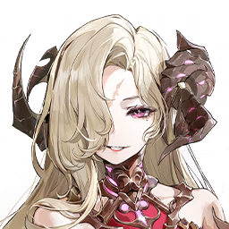

DNA UI
Le système de composants du site, calé sur l'interface du jeu : or laiton mat, cramoisi profond, charbon neutre. Tout est dans assets/dna-ui.css — pas de Storybook, cette page est la référence.
Couleurs
Échantillonnées au pixel sur les captures du jeu. L'or n'est pas un jaune saturé mais un laiton mat ; le cramoisi est profond, pas orangé.
Éléments
Typographie
Trois familles : Cinzel (capitales gravées, labels & titres de section), Cormorant Garamond (titres & noms, sérif à fort contraste), Jost (UI, casse normale).
Atmosphère
.dna-crest · frise filigrane.dna-divider.dna-seclabelBoutons
Calés sur le jeu : rectangle arrondi, fond sombre, liseré fin, casse normale. Le primaire ajoute un liseré doré et un léger voile laiton.
.dna-btn--gold · primaire.dna-btn--ghost · secondaireChamps & filtres
.dna-field.dna-chip · neutre / actif.dna-chip--el · élément
Switch · Stepper · Vues
.dna-switch.dna-stepper.dna-segmentedOnglets & touches
.dna-tabs.dna-key.dna-tooltipTags · Pills · Badges
.dna-tag.dna-pill · date / valeur.dna-elem · badge élément
.dna-nouveau + .dna-notif
Rareté & avatars
.dna-stars
.dna-avatar · biseau / rond
Panneaux & frise
.dna-panel--inner · double filet.dna-panel__crest · panneau à friseRibbon · Accordéon · Seal
.dna-ribbon · cartouche.dna-acc · accordéon ◆
⬥ Sceau démoniaque
Tolérance 139 / 145.dna-sealTuiles de menu
.dna-tile.dna-tile--wideStat rows & barres
.dna-statrow · --hl.dna-progress · .dna-barButin
.dna-rewards · .dna-reward--rare · __badgeEffets récupérés — recolorés sur la palette, pas jetés
Les effets élaborés des protos (figures 3D, anneaux rotatifs, portrait à séparation RGB) sont conservés comme composants et passés du cyan/magenta à l'or/cramoisi.
.dna-figure · 3D breathing.dna-rings · anneaux rotatifs.dna-glitch · split RGB or/cramoisi.dna-marker · pin + ping